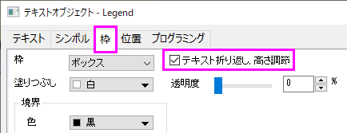

FAQ-1040 凡例テキストを折り畳み、複数行にする方法は？
Wrap-Legend-Text
Last Update: 12/13/2022
- 凡例、軸タイトル、オブジェクトなどを右クリックして、コンテキストメニューからプロパティを選択します。枠タブで、テキスト折り返し、高さ調節にチェックを付けます。
- 
- 8つのアンカーをドラッグして、凡例/タイトル/テキストのサイズを適切な幅に変更します。テキストが折り返され複数の行で表示され、枠の高さは自動的に調整されます。
Note:
- テキスト折り返し、高さ調節にチェックを付けると、オブジェクトフレームをドラッグしてサイズ変更しても、テキストのフォントサイズを変更できません。この場合、ミニツールバーや、標準ツールバーのフォントサイズボタンを使います。
- また、テキスト折り返し、高さ調節にチェックが入っていると、凡例エントリの配置を複数列にすることができません。
- 常にスペースでテキスト文字列を分割します特に、中国語や日本語など、単語を区切るためにスペースを使用しない英語以外のシステムでこのオプションを使用する場合は、このことに注意してください。
|
キーワード:テキスト折り返し, 複数行, 凡例, 軸タイトル, テキストオブジェクト, 行に分ける, 行を分割